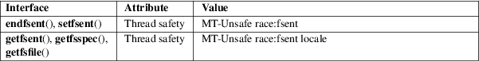

getfsent, getfsspec, getfsfile, setfsent, endfsent − handle fstab entries
Standard C library (libc, −lc)
#include <fstab.h>
int
setfsent(void);
struct fstab *getfsent(void);
void endfsent(void);
struct fstab
*getfsfile(const char *mount_point);
struct fstab *getfsspec(const char
*special_file);
These functions read from the file /etc/fstab. The struct fstab is defined by:
struct fstab {
char *fs_spec; /* block device name */
char *fs_file; /* mount point */
char *fs_vfstype; /* filesystem type */
char *fs_mntops; /* mount options */
const char *fs_type; /* rw/rq/ro/sw/xx option */
int fs_freq; /* dump frequency, in days */
int fs_passno; /* pass number on parallel dump */
};
Here the field fs_type contains (on a *BSD system) one of the five strings "rw", "rq", "ro", "sw", "xx" (read-write, read-write with quota, read-only, swap, ignore).
The function setfsent() opens the file when required and positions it at the first line.
The function getfsent() parses the next line from the file. (After opening it when required.)
The function endfsent() closes the file when required.
The function getfsspec() searches the file from the start and returns the first entry found for which the fs_spec field matches the special_file argument.
The function getfsfile() searches the file from the start and returns the first entry found for which the fs_file field matches the mount_point argument.
Upon success, the functions getfsent(), getfsfile(), and getfsspec() return a pointer to a struct fstab, while setfsent() returns 1. Upon failure or end-of-file, these functions return NULL and 0, respectively.
For an explanation of the terms used in this section, see attributes(7).

Several operating systems have these functions, for example, *BSD, SunOS, Digital UNIX, AIX (which also has a getfstype()). HP-UX has functions of the same names, that however use a struct checklist instead of a struct fstab, and calls these functions obsolete, superseded by getmntent(3).
None.
The getfsent() function appeared in 4.0BSD; the other four functions appeared in 4.3BSD.
These functions are not thread-safe.
Since Linux allows mounting a block special device in several places, and since several devices can have the same mount point, where the last device with a given mount point is the interesting one, while getfsfile() and getfsspec() only return the first occurrence, these two functions are not suitable for use under Linux.
getmntent(3), fstab(5)